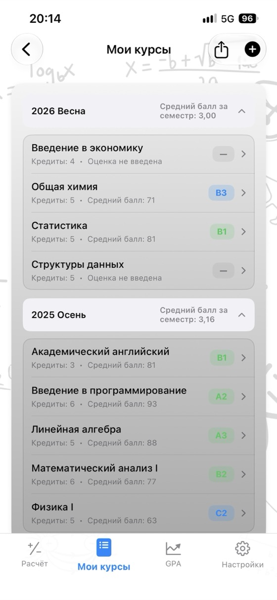
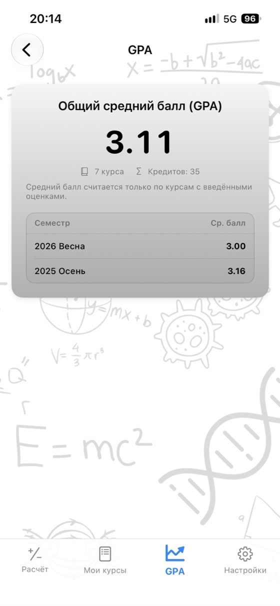
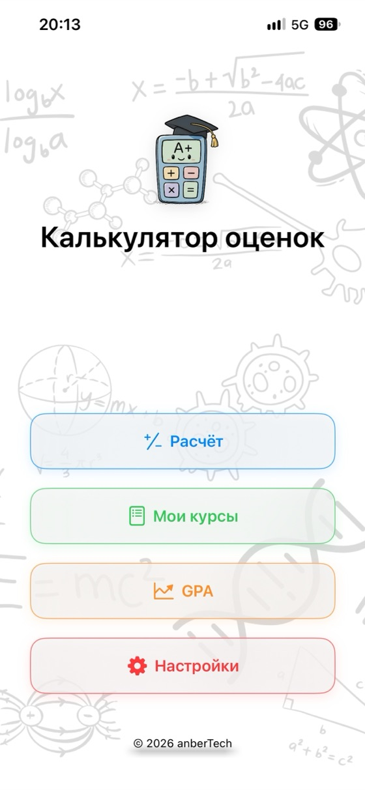
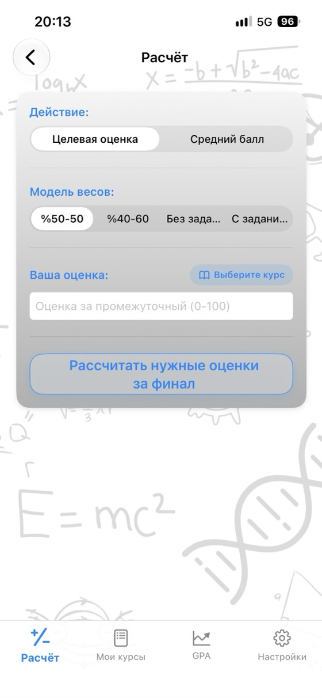
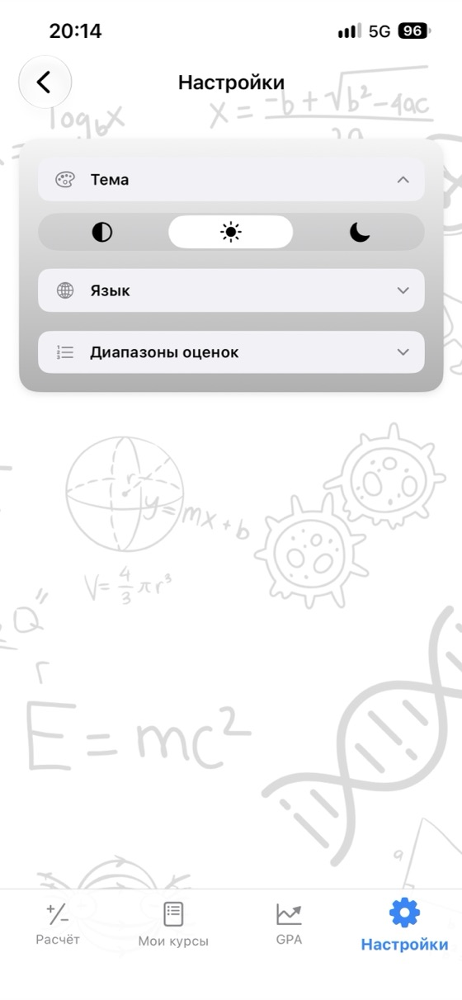

Узнайте свою оценку
и планируйте будущее.
Средний балл за курс, нужная оценка за финальный экзамен и GPA в одном приложении. Без рекламы и регистрации, полностью офлайн.
- ✓ Бесплатно
- ✓ Без рекламы
- ✓ Без регистрации
- ✓ Офлайн


Рассчитайте сейчас
Попробуйте калькулятор перед загрузкой приложения. Меняйте значения — результат обновится мгновенно.
Вес финального экзамена: 60%
Вес финального экзамена: 60%
Бесплатные калькуляторы
Пользуйтесь ими прямо в браузере без загрузки и регистрации. Введённые оценки никогда не покидают ваше устройство.
Почему Калькулятор оценок?
Средний балл за курс
Введите оценки за промежуточный экзамен, финал и задание вместе с их весом и сразу узнайте средний балл и буквенную оценку.
Нужная оценка за финал
Узнайте минимальную оценку за финальный экзамен для каждой буквенной оценки на одном экране.
Отслеживание GPA
Сохраняйте курсы по семестрам — GPA за семестр и общий GPA обновятся автоматически.
Собственная шкала оценок
Настройте диапазоны буквенных оценок и баллы в соответствии с правилами вашего учебного заведения.
Выписка оценок в PDF
Одним касанием поделитесь списком курсов и средним баллом в формате PDF.
17 языков
Русский, английский, испанский, немецкий, японский, арабский, турецкий и другие.
Конфиденциальность прежде всего
Без регистрации, рекламы и отслеживания. Ваши данные остаются на устройстве.
Работает офлайн
Интернет не нужен: пользуйтесь во время экзаменационной недели, в библиотеке и где угодно.
Как выглядит приложение



Часто задаваемые вопросы
Как рассчитать средний балл за курс?
Умножьте каждую оценку на её вес и сложите результаты. Если промежуточный экзамен весит 40%, а финал — 60%: средний балл = промежуточный × 0,40 + финал × 0,60. Оценка 62 за промежуточный и 75 за финал дают 62 × 0,40 + 75 × 0,60 = 69,8. Если есть задание, добавьте его взвешенную оценку; сумма весов должна составлять 100%.
Что нужно получить на финальном экзамене, чтобы пройти курс?
Нужно за финал = (целевой средний балл − промежуточный × вес промежуточного) ÷ вес финала. Если за промежуточный экзамен с весом 40% получено 55, а проходной средний балл равен 50: (50 − 22) ÷ 0,60 = 46,7, поэтому за финал нужно получить не менее 47. Калькулятор оценок одновременно рассчитывает результат для каждой буквенной оценки.
Как рассчитывается GPA?
Умножьте баллы за каждый курс (A = 4.0, B = 3.0 …) на количество кредитов, сложите результаты и разделите на общее число кредитов. Получится ваш средний балл GPA по шкале 4.0.
Везде ли используются одинаковые диапазоны буквенных оценок?
Нет. Диапазоны и баллы различаются в зависимости от страны, университета и даже курса. В приложении можно точно настроить шкалу оценок под свои правила.
Что такое минимальная оценка за финал?
В некоторых учебных заведениях курс не засчитывается, если оценка за финальный экзамен ниже установленного порога (например, 30, 45 или 50), даже при достаточно высоком среднем балле. Укажите минимум, и калькулятор учтёт его при расчёте нужной оценки за финал.
Калькулятор оценок бесплатный?
Да. Приложение бесплатно доступно в App Store, без рекламы, подписки и встроенных покупок. Калькуляторы на этом сайте тоже бесплатны.
Где хранятся мои оценки?
Только на вашем устройстве. Регистрация не нужна, и никакие данные не отправляются на сервер. Оценки, введённые в онлайн-калькуляторы, не покидают браузер.
Есть ли версия для Android?
Версия для Android скоро появится в Google Play. Сейчас приложение доступно для iPhone и iPad с iOS 17.6 или более поздней версией в App Store.
Храните все свои курсы в одном месте
Бесплатно. Без рекламы. Без регистрации.